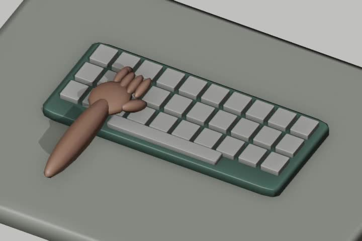

Find an easier way to type a message.
Try a keyboard setup, see what feels easier, and save a small win.
Try a typing setupYour way of typing belongs here.

Try a keyboard setup, see what feels easier, and save a small win.
Try a typing setupYour way of typing belongs here.
